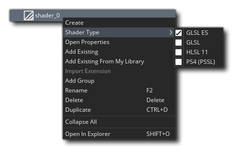
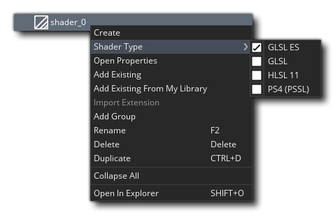

Les shaders sont un outil très puissant qui peut être utilisé pour manipuler les graphiques que votre jeu affiche à l'écran, permettant des effets incroyablement rapides pouvant aller, par exemple, d'une teinte subtile à une image-objet, jusqu'à des effets de distorsion plein écran. Mais qu'est-ce qu'un shader?
Les shaders sont un outil très puissant qui peut être utilisé pour manipuler les graphiques que votre jeu affiche à l'écran, permettant des effets incroyablement rapides pouvant aller, par exemple, d'une teinte subtile à une image-objet, jusqu'à des effets de distorsion plein écran. Mais qu'est-ce qu'un shader?
Un shader est essentiellement un programme en deux parties qui s'exécute directement sur la carte graphique elle-même, ce qui le rend très rapide puisque le GPU fait tout le travail et libère des cycles de CPU pour votre code de jeu. Le shader complet comprend un programme de vertex shader et un programme de fragment shader (également connu sous le nom de pixel shader). Ces deux petits programmes fonctionnent ensemble afin de manipuler ce que la carte graphique rend à l'écran. Cela vous permet ensuite de manipuler en temps réel, la position, la couleur et les valeurs alpha qui sont réellement rendues dans le tampon d'affichage.
Le Vertex Shader est l'étape du shader programmable dans le pipeline de rendu qui gère le traitement des sommets individuels (les points des triangles utilisés pour rendre n'importe quelle image) et lorsque vous reproduisez une géométrie - comme un sprite ou une surface - GameMaker Studio 2 crée un flux de sommets, appelé Vertex Buffer, qui définit la géométrie de ces triangles. Un sprite par exemple aurait une géométrie de deux triangles (polygones) rendus ensemble pour former un "quad". Ce flux de vertex du Vertex Buffer est alimenté en tant qu'entrée dans le Vertex Shader, qui peut traiter les données de sommets de manière programmable. La sortie Vertex Shader est utilisée par le GPU pour assembler des triangles, qui sont ensuite correctement écrêtés et ramenés au port de visualisation, puis envoyés au bloc de rastérisation du GPU qui génère un nouveau flux de sortie, constitué de quelque chose appelé Fragments. Ce sont des structures de données minuscules, dont chacune est relative à un seul pixel du triangle qui apparaît sur l'écran.
Le fragment Shader est l'étape de shader programmable dans le pipeline de rendu qui traite des "fragments" - les pixels interpolés utilisés pour texturer un polygone donné - et ils sont responsables de la sortie de la couleur finale du pixel de chaque pixel rendu. Fondamentalement, cela fonctionne comme ceci: le Shader Fragment reçoit en entrée tous les fragments (les pixels individuels du triangle étant rendu) qui ont été transmis le long du pipeline par le Vertex Shader. Vous pouvez ensuite traiter ces fragments pour changer la couleur et l'alpha du pixel de destination final qui sera dessiné à l'écran.
Un aperçu complet de la façon dont les shaders fonctionnent réellement et de leur place dans le pipeline graphique est hors de portée de ce manuel, mais YoYo Games a produit un certain nombre d'articles de Blog Tech qui donnent une excellente base pour commencer:
GameMaker Studio 2 prend en charge les langues de shader suivantes:
| Shader Language | Plate-forme cible |
|---|---|
| GLSL ES | Toutes les plates-formes cibles |
| GLSL | Mac et Ubuntu (Linux) |
| HLSL11 | Windows, UWP, XboxOne |
| PSSL | Playstation 4 |
Pour créer une ressource de shader, faites un clic droit  dans le dossier Shader de l'arborescence Ressource et sélectionnez Créer. Une fois que vous avez créé le shader de base, vous pouvez utiliser la souris droite
dans le dossier Shader de l'arborescence Ressource et sélectionnez Créer. Une fois que vous avez créé le shader de base, vous pouvez utiliser la souris droite  menu sur la nouvelle ressource pour sélectionner le type de shader avant de continuer à modifier le code: 
menu sur la nouvelle ressource pour sélectionner le type de shader avant de continuer à modifier le code: 
L'éditeur de code lui-même est divisé en deux programmes lorsque vous créez un nouveau shader, chacun étant disponible à partir des onglets en haut. C'est parce que vous ne pouvez pas créer un shader sans les deux parties. Même si vous souhaitez n'utiliser que le fragment shader, vous devrez d'abord créer un vertex shader "pass through", c'est pourquoi par défaut, tout nouveau shader créé aura un vertex et un fragment traversant le shader déjà codé pour vous (en la capture d'écran en haut de la page, vous pouvez voir que nous avons utilisé la vue de l' éditeur de code pour afficher les deux côte à côte... utile lorsque vous travaillez sur les deux programmes shader ensemble).
Il convient de noter que vous pouvez utiliser les shaders GLSL ES sur toutes les plates-formes cibles, mais pour la plate-forme cible HTML5, vous devez avoir activé WebGL dans les options de jeu HTML5, sinon cela ne fonctionnera pas.
Pour plus d'informations sur les fonctions de shader et sur leur utilisation dans GameMaker Studio 2, consultez les pages suivantes:
- Shader Functions - La section de référence GML pour les shaders
- Shader Constants - Constantes intégrées à GameMaker Studio 2 pouvant être utilisées lors de l'écriture de shaders
- GLSL ES Spécifications - pdf des spécifications Open GL Shader Language GameMaker Studio par GameMaker Studio 2